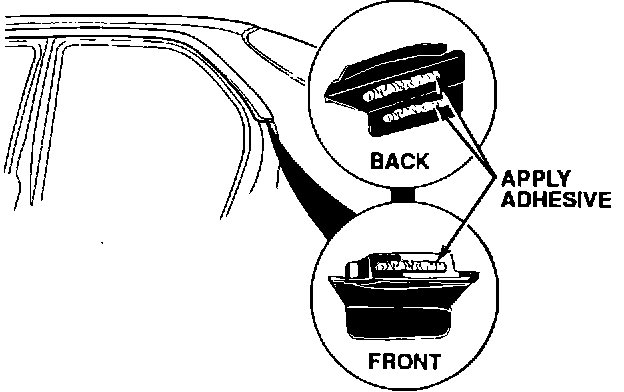

Window Moulding - End Cap Missing/Loose
September 15, 1992BULLETIN NO.
92-025
YEAR
1991-92
MODEL
LEGEND 4-DOOR
VIN APPLCATION
ALL
Rear Side Window Molding End Cap Replacement
SYMPTOM
The rear side window (C pillar) molding end caps are missing or loose.
PROBABLE CAUSE
The adhesive between the end cap and the molding has hardened and disintegrated.
CORRECTIVE ACTION
Reattach or replace both end caps.
1. Remove caps if necessary.
2. Dampen a cloth with Contact Cleaner (P/N TB-SP-270TA).
Clean the inside of the C pillar molding and the painted surface just below it.

3. Apply Weatherstrip Cement (P/N 08712-0002), or equivalent, to the front and back sides of the end cap.
PARTS INFORMATION
End cap, molding right P/N 72920-SP0-999
End cap, molding left P/N 72960-SP0-999
WARRANTY INFORMATION
In warranty:
The normal warranty applies.
Out of warranty:
Any repair performed after warranty expiration may be eligible for goodwill consideration by the District Service Manager. You must request consideration, and get the DSM's decision, before starting work.
Operation number: 837200
Flat rate time: 0.2 hour
Failed P/N: 72920-SP0-999
Defect code: 025
Contention code: A02